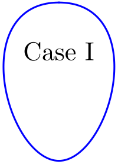
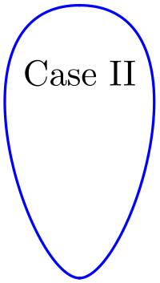
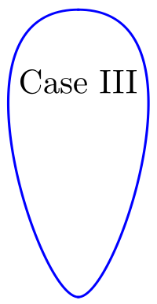

Syntax:
weld_shape_teardrop width w case i
Examples:
weld_shape_teardrop width 100.0 case I
weld_shape_teardrop width 100.0 case II
weld_shape_teardrop width 100.0 case III
The three examples above are depicted in the images below. These images illustrate cases I, II and III for a fixed width of 100 sites. Because the width is fixed, each case produces a different pool length. NOTE: due to scaling for this documentation, constant width=100 for each pool shape is not perfectly rendered in images below although they are close.
  Description:
Specify size and shape of weld pool at top surface of weld. Shape of pool at root surface (bottom) is controlled by alpha in potts/weld. The aspect ratio length/width for cases I, II, and III are 1.4, 1.8 and 2.2 respectively. If a specific width is desired then that is specified directly in the command and pool length is implied by the aspect ratio. On the other hand, if a specific length desired, then the input width must be calculated by hand using the desired length and aspect ratio.
Restrictions:
This command is only valid when used with potts/weld.
Related commands:
Default: none